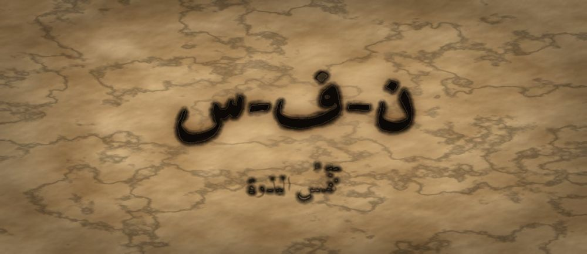

مَطبعةُ جُذور · دبي · MCMXXVI · سِلْسِلَةُ فَنِّ البَيان

مَرحلةُ البَذْرَة · الفئة ٤–٦ · الجذر ن-ف-س · جابر بن حيّان
❦ ✦ ❧
السِّفْرُ ١ — نَفَسُ البذرة
«نَفَسِي يَقُولُ: أَنَا هُنَا»

الرِّسَالَةُ الجَوْهَرِيَّة
قَبْلَ الْكَلَامِ نَفَسٌ، وَقَبْلَ النَّفَسِ حُضُورٌ. حِينَ يَشْعُرُ الطِّفْلُ بِهَوَائِهِ يَدْخُلُ وَيَخْرُجُ، يَكْتَشِفُ أَنَّ لَهُ جَسَدًا يَسْكُنُهُ وَمَكَانًا يَمْلَؤُهُ. النَّفَسُ الْهَادِئُ لَيْسَ تَمْرِينًا، بَلْ أَوَّلُ جُمْلَةٍ يَقُولُهَا الْجَسَدُ لِلْعَالَمِ: أَنَا هُنَا، وَأَنَا بِخَيْرٍ.
بِطَاقَةُ هُوِيَّةِ السِّفْر
| المستوى / الدرجة | بَذْرَة — بَذْرَةٌ تَتَنَفَّسُ (الدرجةُ الأولى في المستوى الأوّل) |
| الفئة العمرية | ٤–٦ سنوات · نطاقُ تداخلٍ يمتدُّ إلى ٧ للمتعلّمِ المتأخّرِ |
| الجذر الأساسي | ن – ف – س · النَّفَسُ: الْهَوَاءُ حِينَ يَصِيرُ حُضُورًا |
| أسرة الجذر | نَفَس · تَنَفَّسَ · أَنْفَاس · نَفِيس · نَافَسَ · مُتَنَفَّس |
| المحطّة | النَّفَسُ — أوّلُ أثرٍ محسوسٍ للحضورِ قبلَ أيِّ صوتٍ |
| المرساة الحسّيّة | كَفٌّ على البطنِ لرصدِ ارتفاعِهِ وانخفاضِهِ — الطفلُ يضعُ كفَّهُ بنفسِهِ |
| الاستعارة | بَذْرَةٌ تحتَ التُّرابِ تتنفَّسُ أوّلَ مرّةٍ فتعرفُ أنّها موجودةٌ |
| الشخصيتان الحكيمتان | جابرُ بنُ حيّانَ (رائدُ التجربةِ والملاحظةِ) + الجَدّةُ رملة |
| الشخصية الرمزيّة | نورُ البذرةِ — بطلةُ السلسلةِ في أوّلِ ظهورٍ لها |
| الشخصية المضادّة | الرِّيحُ الْعَجُولَةُ — شخصيّةٌ رمزيّةٌ (لا تاريخيّةٌ) تُمثِّلُ الاستعجالَ، وتتعلّمُ التمهُّلَ |
| المهارة (فعل) | أَتَنَفَّسُ — أوّلُ حلقةٍ في القوسِ التراكميِّ للسلسلةِ |
| المرجعُ النظريّ | استرشادًا بـ TRT — نظرية القراءة الملموسة · ومجال الوعيِ الذاتيِّ |
| حدّ اللمس | كلُّ حركةٍ يؤدّيها الطفلُ بنفسِهِ؛ لا تلمسُ يدُ المرافقِ جسدَ الطفلِ |
صَاحِبُ السِّفْرِ مِنَ التُّرَاث
جابرُ بنُ حيّانَ عالِمٌ عربيٌّ من القرنِ الثانِي الهجريِّ، اشتُهِرَ بالكيمياءِ ومنهجِ التجربةِ والملاحظةِ الدقيقةِ، وبقولِهِ إنَّ العلمَ يُبنى بالعملِ لا بالظنِّ. نستلهمُ منهُ هنا: أنَّ الطفلَ يعرفُ نَفَسَهُ بالتجربةِ المباشرةِ — يضعُ كفَّهُ ويلاحظُ ويصفُ ما شعرَ بهِ، لا بما يُقالُ لهُ.
الشَّخْصِيَّةُ المُضَادَّة — الرِّيحُ الْعَجُولَةُ — شخصيّةٌ رمزيّةٌ لا تاريخيّةٌ، تهبُّ مسرعةً فتقلبُ كلَّ شيءٍ وتظنُّ أنَّ السرعةَ قوّةٌ. لا تُهزَمُ ولا تُشيطَنُ؛ بل تتعلّمُ في النهايةِ أنْ تُبطِئَ، فتكتشفُ أنَّ الهواءَ الهادئَ هو الذي يُنبِتُ البذورَ.
الجَذْرُ وَأُسْرَتُه
ن-ف-س — نَفَس · تَنَفَّسَ · أَنْفَاس · نَفِيس · نَافَسَ · مُتَنَفَّس
الجذرُ (ن-ف-س) سالمٌ صحيحُ الحروفِ، ومعناهُ المحوريُّ يدورُ على الخروجِ والانفراجِ والسَّعَةِ؛ ومنهُ «مُتَنَفَّس» أي مكانُ الفَرَجِ. يلاحظُ المعلّمُ صلةَ «نَفَس» بـ«نَفْس» (الذاتِ): بينَهما نسبٌ لغويٌّ لطيفٌ يُشيرُ إلى أنَّ الهواءَ الداخلَ يحملُ إحساسَ الوجودِ — نذكرُهُ للمعلّمِ دونَ إثقالٍ على الطفلِ.
القِصَّةُ الكَامِلَة
المشهد ١ — بَذْرَةٌ فِي الظَّلَامِ لَا تَعْرِفُ أَنَّهَا مَوْجُودَةٌ
تَحْتَ التُّرَابِ، فِي مَكَانٍ دَافِئٍ مُظْلِمٍ، كَانَتْ هُنَاكَ بَذْرَةٌ صَغِيرَةٌ اسْمُهَا نُورُ. لَمْ تَكُنْ نُورُ تَعْرِفُ شَيْئًا: لَا تَعْرِفُ أَنَّ لَهَا جِسْمًا، وَلَا أَنَّ فَوْقَهَا سَمَاءً، وَلَا أَنَّ لِلْعَالَمِ لَوْنًا. كَانَتْ سَاكِنَةً جِدًّا، كَأَنَّهَا نَائِمَةٌ مُنْذُ زَمَنٍ طَوِيلٍ. وَذَاتَ صَبَاحٍ، نَزَلَتْ قَطْرَةُ مَطَرٍ صَغِيرَةٌ فَلَمَسَتْ قِشْرَتَهَا الرَّقِيقَةَ، فَشَعَرَتْ نُورُ بِشَيْءٍ غَرِيبٍ: شَيْءٍ يَتَحَرَّكُ فِي دَاخِلِهَا، يَدْخُلُ وَيَخْرُجُ، يَدْخُلُ وَيَخْرُجُ. لَمْ تَعْرِفْ مَا اسْمُهُ. قَالَتْ فِي نَفْسِهَا: «مَا هَذَا الَّذِي يَمْلَؤُنِي ثُمَّ يَتْرُكُنِي؟ هَلْ هُوَ لِي؟ وَهَلْ أَنَا... مَوْجُودَةٌ؟» وَبَقِيَتْ تَسْأَلُ وَتَسْأَلُ، وَالتُّرَابُ حَوْلَهَا صَامِتٌ لَا يُجِيبُ. وَمَرَّ الْوَقْتُ بَطِيئًا فِي الظُّلْمَةِ الدَّافِئَةِ. كَانَتْ نُورُ تَنْتَظِرُ أَنْ يَأْتِيَهَا جَوَابٌ مِنْ فَوْقُ أَوْ مِنْ تَحْتُ، فَلَا يَأْتِي. وَكُلَّمَا سَكَنَتْ قَلِيلًا، عَادَ ذَلِكَ الشَّيْءُ الصَّغِيرُ يَدْخُلُ وَيَخْرُجُ، هَادِئًا، صَبُورًا، كَأَنَّهُ يَقُولُ لَهَا شَيْئًا بِلُغَةٍ لَا تَعْرِفُهَا بَعْدُ. فَقَالَتْ نُورُ: «سَأَنْتَظِرُ. لَعَلَّ أَحَدًا يُخْبِرُنِي مَا اسْمُهُ.»
المشهد ٢ — الرِّيحُ الْعَجُولَةُ تَمُرُّ فَتُرْبِكُ كُلَّ شَيْءٍ
فَجْأَةً هَبَّتِ الرِّيحُ الْعَجُولَةُ فَوْقَ الْأَرْضِ. كَانَتْ تَجْرِي وَتَجْرِي بِلَا تَوَقُّفٍ، تَقْلِبُ الْأَوْرَاقَ وَتَنْثُرُ الْغُبَارَ وَتَصِيحُ: «أَسْرِعِي! أَسْرِعِي يَا بَذْرَةُ! مَنْ يَتَمَهَّلْ يَضِعْ! أَنَا لَا أَقِفُ أَبَدًا!» فَاضْطَرَبَتْ نُورُ. صَارَ الشَّيْءُ الَّذِي يَدْخُلُ وَيَخْرُجُ سَرِيعًا مُتَقَطِّعًا، مِثْلَ خُطُوَاتٍ خَائِفَةٍ. حَاوَلَتْ أَنْ تُسْرِعَ مَعَ الرِّيحِ فَتَعِبَتْ، وَحَاوَلَتْ أَنْ تَفْهَمَ فَلَمْ تَفْهَمْ. وَقَالَتِ الرِّيحُ وَهِيَ تَبْتَعِدُ: «الْهُدُوءُ لِلضَّعِيفِ يَا صَغِيرَةُ!» ثُمَّ ذَهَبَتْ. وَبَقِيَتْ نُورُ فِي التُّرَابِ وَقَلْبُهَا يَخْفِقُ، لَا تَدْرِي: هَلِ الْمُشْكِلَةُ فِيهَا هِيَ، أَمْ فِي الرِّيحِ الَّتِي لَا تَقِفُ؟ وَحَاوَلَتْ نُورُ أَنْ تَتَذَكَّرَ ذَلِكَ الشَّيْءَ الْهَادِئَ الَّذِي كَانَ يَدْخُلُ وَيَخْرُجُ، فَلَمْ تَجِدْهُ. كَانَ قَدْ صَارَ سَرِيعًا مِثْلَ الرِّيحِ تَمَامًا. وَقَالَتْ فِي نَفْسِهَا: «كَيْفَ آخُذُ شَيْئًا مِنِّي وَأُعِيدُهُ إِلَيَّ؟» وَظَلَّ التُّرَابُ سَاكِنًا حَوْلَهَا، لَا يَسْتَعْجِلُ أَحَدًا، كَأَنَّهُ يَعْرِفُ الْجَوَابَ وَيَنْتَظِرُهَا لِتَجِدَهُ بِنَفْسِهَا.
المشهد ٣ — جَابِرٌ وَالْجَدَّةُ رَمْلَةُ يُعَلِّمَانِ نُورَ أَنْ تُلَاحِظَ
جَلَسَ قُرْبَ التُّرَابِ رَجُلٌ حَكِيمٌ اسْمُهُ جَابِرُ بْنُ حَيَّانَ، وَكَانَ لَا يُصَدِّقُ شَيْئًا حَتَّى يُجَرِّبَهُ بِيَدِهِ. وَمَعَهُ الْجَدَّةُ رَمْلَةُ. قَالَ جَابِرٌ بِصَوْتٍ هَادِئٍ: «يَا نُورُ، أَنْتِ لَا تَحْتَاجِينَ أَنْ تُسْرِعِي. أَنْتِ تَحْتَاجِينَ أَنْ تُلَاحِظِي.» وَقَالَتِ الْجَدَّةُ رَمْلَةُ: «انْظُرِي إِلَيَّ. أَنَا أَضَعُ كَفِّي عَلَى بَطْنِي — هَكَذَا. الْآنَ يَدْخُلُ الْهَوَاءُ، فَيَرْتَفِعُ كَفِّي قَلِيلًا. وَالْآنَ يَخْرُجُ الْهَوَاءُ، فَيَنْزِلُ كَفِّي قَلِيلًا. لَا أَحْبِسُ شَيْئًا أَبَدًا، وَلَا أَدْفَعُ شَيْئًا. أَتْرُكُ الْهَوَاءَ يَذْهَبُ وَيَجِيءُ كَمَا يُحِبُّ.» فَتَحَتْ نُورُ انْتِبَاهَهَا كُلَّهُ وَقَالَتْ: «وَهَلْ أَسْتَطِيعُ أَنَا أَيْضًا؟» فَقَالَ جَابِرٌ: «جَرِّبِي بِنَفْسِكِ، وَأَخْبِرِينَا مَاذَا شَعَرْتِ.» ثُمَّ أَضَافَ جَابِرٌ: «أَنَا لَا أُصَدِّقُ شَيْئًا حَتَّى أَرَاهُ بِعَيْنِي وَأَلْمَسَهُ بِيَدِي. وَأَنْتِ كَذَلِكَ: لَا تُصَدِّقِينِي، بَلْ جَرِّبِي.» وَقَالَتِ الْجَدَّةُ: «وَتَذَكَّرِي أَمْرًا مُهِمًّا يَا نُورُ: لَا تَحْبِسِي هَوَاءَكِ أَبَدًا، وَلَا تَعُدِّي، وَلَا تَدْفَعِي. نَحْنُ نُلَاحِظُ فَقَطْ، وَالْمُلَاحَظَةُ لَا تُتْعِبُ أَحَدًا.»
المشهد ٤ — نُورُ تَضَعُ كَفَّهَا عَلَى بَطْنِهَا فَتَشْعُرُ بِنَفَسِهَا
وَضَعَتْ نُورُ كَفَّهَا الصَّغِيرَ عَلَى بَطْنِهَا بِنَفْسِهَا — لَمْ يَضَعْهُ أَحَدٌ لَهَا. ثُمَّ سَكَتَتْ وَانْتَظَرَتْ. دَخَلَ الْهَوَاءُ... فَارْتَفَعَ كَفُّهَا قَلِيلًا. خَرَجَ الْهَوَاءُ... فَنَزَلَ كَفُّهَا قَلِيلًا. مَرَّةً أُخْرَى: يَرْتَفِعُ... وَيَنْزِلُ. وَفَجْأَةً فَهِمَتْ! «هَذَا نَفَسِي! إِنَّهُ يَتَحَرَّكُ وَحْدَهُ، وَلَا يَحْتَاجُ أَنْ أُسْرِعَ، وَلَا أَنْ أَحْبِسَهُ.» شَعَرَتْ نُورُ بِدِفْءٍ عَجِيبٍ فِي صَدْرِهَا. لَمْ تَعُدْ خَائِفَةً. لَمْ تَعُدْ تَسْأَلُ: هَلْ أَنَا مَوْجُودَةٌ؟ لِأَنَّ كَفَّهَا كَانَ يُخْبِرُهَا فِي كُلِّ لَحْظَةٍ: نَعَمْ، أَنْتِ هُنَا. وَقَالَتِ الْجَدَّةُ رَمْلَةُ مُبْتَسِمَةً: «هَذَا أَوَّلُ دَرْسٍ يَا نُورُ. مَنْ عَرَفَ نَفَسَهُ، عَرَفَ أَنَّهُ مَوْجُودٌ.» وَجَلَسَتِ الْجَدَّةُ رَمْلَةُ قُرْبَهَا وَلَمْ تَمُدَّ يَدَهَا إِلَيْهَا، بَلْ وَضَعَتْ كَفَّهَا عَلَى بَطْنِهَا هِيَ، فَصَارَا يَتَنَفَّسَانِ مَعًا وَكُلٌّ يَدُهُ عَلَى نَفْسِهِ. وَقَالَتْ نُورُ ضَاحِكَةً: «نَحْنُ نَفْعَلُ الشَّيْءَ نَفْسَهُ، كُلُّ وَاحِدَةٍ عِنْدَ نَفْسِهَا!» وَقَالَ جَابِرٌ: «هَذَا أَجْمَلُ عِلْمٍ: أَنْ تَعْرِفَ نَفْسَكَ بِيَدِكَ أَنْتَ.»
المشهد ٥ — نُورُ تَقُولُ «أَنَا هُنَا» فَتَتَمَهَّلُ الرِّيحُ
رَجَعَتِ الرِّيحُ الْعَجُولَةُ تَجْرِي مِنْ بَعِيدٍ: «أَسْرِعِي! أَسْرِعِي!» لَكِنَّ نُورَ هَذِهِ الْمَرَّةَ لَمْ تَضْطَرِبْ. تَرَكَتْ كَفَّهَا عَلَى بَطْنِهَا، وَتَرَكَتِ الْهَوَاءَ يَدْخُلُ وَيَخْرُجُ عَلَى مَهْلِهِ، ثُمَّ قَالَتْ بِهُدُوءٍ: «أَنَا هُنَا.» تَوَقَّفَتِ الرِّيحُ. لِأَوَّلِ مَرَّةٍ مُنْذُ زَمَنٍ طَوِيلٍ، تَوَقَّفَتْ. وَنَظَرَتْ إِلَى الْبَذْرَةِ الصَّغِيرَةِ الْهَادِئَةِ وَقَالَتْ: «كَيْفَ تَقْدِرِينَ أَنْ تَكُونِي سَاكِنَةً هَكَذَا؟ أَنَا أَجْرِي مُنْذُ وُلِدْتُ وَلَمْ أَصِلْ إِلَى شَيْءٍ.» قَالَتْ نُورُ: «جَرِّبِي أَنْ تَمُرِّي بَطِيئَةً مَرَّةً وَاحِدَةً.» فَفَعَلَتِ الرِّيحُ... فَمَرَّتْ نَسِيمًا لَطِيفًا، فَاهْتَزَّتِ الْأَوْرَاقُ وَلَمْ تَنْكَسِرْ. فَقَالَتِ الرِّيحُ فَرِحَةً: «الْآنَ صِرْتُ أَنْفَعُ!» وَقَفَتِ الرِّيحُ تَنْظُرُ إِلَى الْأَوْرَاقِ الَّتِي لَمْ تَتَكَسَّرْ هَذِهِ الْمَرَّةَ، وَإِلَى الْغُبَارِ الَّذِي بَقِيَ فِي مَكَانِهِ. وَقَالَتْ بِصَوْتٍ خَافِتٍ: «كُنْتُ أَظُنُّ أَنَّ مَنْ يُسْرِعُ يَكْبُرُ. وَالْيَوْمَ عَرَفْتُ أَنَّ مَنْ يَتَمَهَّلُ يَنْفَعُ.» فَقَالَتْ نُورُ: «تَعَالَيْ نَجْلِسْ قَلِيلًا.» فَجَلَسَتِ الرِّيحُ لِأَوَّلِ مَرَّةٍ فِي حَيَاتِهَا.
المشهد ٦ — طَقْسُ الْخِتَامِ: نَفَسٌ وَاحِدٌ هَادِئٌ
قَالَتِ الْجَدَّةُ رَمْلَةُ: «قَبْلَ أَنْ نَفْتَرِقَ، لَنَا طَقْسٌ صَغِيرٌ.» فَجَلَسَتْ نُورُ، وَجَلَسَتِ الرِّيحُ اللَّطِيفَةُ بِجَانِبِهَا. قَالَتِ الْجَدَّةُ: «ضَعْ كَفَّكَ عَلَى بَطْنِكَ بِيَدِكَ أَنْتَ. لَا تَحْبِسْ هَوَاءَكَ أَبَدًا. اتْرُكْهُ يَدْخُلُ... وَاتْرُكْهُ يَخْرُجُ... ثُمَّ قُلْ فِي قَلْبِكَ: أَنَا هُنَا.» فَعَلَتْ نُورُ ذَلِكَ ثَلَاثَ مَرَّاتٍ عَلَى مَهْلٍ. وَفِي كُلِّ مَرَّةٍ كَانَ التُّرَابُ يَبْدُو أَدْفَأَ، وَالْمَكَانُ أَوْسَعَ. وَقَالَ جَابِرٌ وَهُوَ يَقُومُ: «تَذَكَّرِي يَا نُورُ: أَنْتِ لَمْ تَتَعَلَّمِي الْيَوْمَ شَيْئًا جَدِيدًا مِنْ خَارِجِكِ. أَنْتِ لَاحَظْتِ شَيْئًا كَانَ فِيكِ مُنْذُ الْبِدَايَةِ.» وَابْتَسَمَتْ نُورُ، وَهِيَ تَعْرِفُ أَنَّ غَدًا سَتُحَاوِلُ أَنْ تَجْعَلَ هَذَا النَّفَسَ... صَوْتًا. وَقَالَتِ الرِّيحُ: «وَأَنَا؟ هَلْ لِي نَفَسٌ أَيْضًا؟» فَضَحِكَتِ الْجَدَّةُ وَقَالَتْ: «أَنْتِ كُلُّكِ نَفَسٌ يَا صَغِيرَتِي، وَلَكِنَّكِ لَمْ تَقِفِي يَوْمًا لِتَشْعُرِي بِهِ.» فَسَكَنَتِ الرِّيحُ لَحْظَةً طَوِيلَةً، وَصَارَ الْحَقْلُ كُلُّهُ هَادِئًا، وَكَأَنَّ الْأَرْضَ نَفْسَهَا تَتَنَفَّسُ مَعَهُمَا عَلَى مَهْلٍ.
النُّسْخَةُ المُخْتَصَرَة
كَانَتْ نُورُ بَذْرَةً صَغِيرَةً تَحْتَ التُّرَابِ. لَمْ تَكُنْ تَعْرِفُ أَنَّهَا مَوْجُودَةٌ. مَرَّتِ الرِّيحُ الْعَجُولَةُ وَصَاحَتْ: «أَسْرِعِي! أَسْرِعِي!» فَخَافَتْ نُورُ وَتَعِبَتْ. جَاءَتِ الْجَدَّةُ رَمْلَةُ وَمَعَهَا الْحَكِيمُ جَابِرٌ، فَقَالَتِ الْجَدَّةُ: «ضَعِي كَفَّكِ عَلَى بَطْنِكِ. لَا تَحْبِسِي هَوَاءَكِ. اتْرُكِيهِ يَدْخُلُ وَيَخْرُجُ.» وَضَعَتْ نُورُ كَفَّهَا بِنَفْسِهَا... فَارْتَفَعَ كَفُّهَا، ثُمَّ نَزَلَ. ثُمَّ ارْتَفَعَ، ثُمَّ نَزَلَ. فَقَالَتْ فَرِحَةً: «هَذَا نَفَسِي! أَنَا هُنَا!» رَجَعَتِ الرِّيحُ تَصِيحُ، لَكِنَّ نُورَ بَقِيَتْ هَادِئَةً وَقَالَتْ: «أَنَا هُنَا.» فَتَوَقَّفَتِ الرِّيحُ، وَجَرَّبَتْ أَنْ تَمُرَّ بَطِيئَةً، فَصَارَتْ نَسِيمًا لَطِيفًا لَا يَكْسِرُ الْأَوْرَاقَ. وَنَامَتْ نُورُ وَكَفُّهَا عَلَى بَطْنِهَا، تَقُولُ: «نَفَسِي يَقُولُ: أَنَا هُنَا.» وَقَالَتِ الْجَدَّةُ رَمْلَةُ: «مَنْ عَرَفَ نَفَسَهُ عَرَفَ أَنَّهُ مَوْجُودٌ.» وَقَالَ جَابِرٌ: «أَنْتِ لَمْ تَتَعَلَّمِي شَيْئًا مِنْ خَارِجِكِ، بَلْ لَاحَظْتِ شَيْئًا كَانَ فِيكِ.» فَجَلَسَتْ نُورُ وَالرِّيحُ مَعًا، وَكُلُّ وَاحِدَةٍ كَفُّهَا عَلَى نَفْسِهَا، لَا تَحْبِسُ هَوَاءَهَا وَلَا تَسْتَعْجِلُهُ.
المِرْسَاةُ الحِسِّيَّة
يَضَعُ الطِّفْلُ كَفَّهُ بِنَفْسِهِ عَلَى بَطْنِهِ وَيَجْلِسُ مُسْتَرِيحًا. يُلَاحِظُ أَنَّ كَفَّهُ يَرْتَفِعُ حِينَ يَدْخُلُ الْهَوَاءُ وَيَنْزِلُ حِينَ يَخْرُجُ، ثُمَّ يَصِفُ مَا شَعَرَ بِهِ بِكَلِمَةٍ وَاحِدَةٍ. التَّنَفُّسُ طَبِيعِيٌّ مُتَّصِلٌ تَمَامًا: لَا حَبْسَ لِلنَّفَسِ، وَلَا عَدَّ ثَوَانٍ، وَلَا شَهِيقَ عَمِيقًا مَطْلُوبًا. الْمَقْصُودُ الْمُلَاحَظَةُ لَا الْأَدَاءُ، وَالتَّوَقُّفُ حَقٌّ لِلطِّفْلِ فِي أَيِّ لَحْظَةٍ.
العَنَاصِرُ الخَمْسَةُ لِلتَّطْبِيق
| المُخرَجُ اللُّغَويُّ | يقولُ الطفلُ: «نَفَسِي يَقُولُ: أَنَا هُنَا» وكفُّهُ على بطنِهِ — جملةٌ واحدةٌ قصيرةٌ يملكُها ويكرّرُها بلا تصحيحٍ لنبرتِها. |
| الحركةُ الجسديّةُ | يضعُ الطفلُ كفَّهُ بنفسِهِ على بطنِهِ ويرصدُ الارتفاعَ والانخفاضَ ثلاثَ مرّاتٍ. تنفُّسٌ طبيعيٌّ متّصلٌ فقط: لا حبسَ نفَسٍ ولا عدَّ ثوانٍ ولا زفيرٌ قسريٌّ. |
| الدفءُ العلائقيُّ | يجلسُ المرافقُ مقابلَ الطفلِ ويضعُ كفَّهُ على بطنِهِ هو، فيتنفَّسانِ معًا بالتزامنِ نظرًا لا لمسًا. وإنْ أرادَ الطفلُ أنْ يضعَ كفَّهُ على بطنِ مرافقِهِ فذلك اختياريٌّ بموافقةٍ صريحةٍ منهما معًا. |
| البديلُ الحسّيُّ | ريشةٌ أو منديلٌ ورقيٌّ خفيفٌ يمسكُهُ الطفلُ أمامَ فمِهِ ويراهُ يتحرَّكُ مع الزفيرِ الطبيعيِّ — لمن لا يريحُهُ لمسُ بطنِهِ أو لا يشعرُ بالحركةِ. |
| الجسرُ الإنجليزيُّ | «My breath says: I am here.» — تُقالُ مرّةً واحدةً بعدَ العربيّةِ، لموازنةِ اللغتينِ لا لاستبدالِهما. |
دَلِيلُ الأَهْلِ وَالمُعَلِّم
| قبل الجلسة | ضعوا الأجهزةَ كلَّها في صندوقٍ مغلقٍ، وأطفِئوا الضجيجَ الخلفيَّ. اجلسوا دقيقةً في سكونٍ، وأخبِروا الطفلَ بجملةٍ واحدةٍ ما سيحدثُ: «سنُلاحِظُ الهواءَ الذي يدخلُ ويخرجُ.» لا وعودَ بجائزةٍ ولا تهيئةٌ طويلةٌ. |
| أثناء الجلسة | اجلسوا في مستوى نظرِ الطفلِ، وضعوا كفَّكم على بطنِكم أنتم أوّلًا ليقلِّدَ بالنظرِ. لا تصحّحوا عمقَ نَفَسِهِ ولا إيقاعَهُ، ولا تقولوا «خُذْ نفَسًا عميقًا». اكتفوا بسؤالٍ واحدٍ: «ماذا شعرتَ تحتَ كفِّكَ؟» |
| بعد الجلسة | اجعلوها عادةً قصيرةً في لحظتينِ ثابتتينِ يوميًّا: قبلَ النومِ وبعدَ العودةِ من الروضةِ. سجّلوا في مفكّرةِ الثلّاجةِ كلمةً واحدةً وصفَ بها الطفلُ نَفَسَهُ اليومَ، واقرَؤوها لهُ في نهايةِ الأسبوعِ ليرى أثرَهُ. |
مُؤَشِّرَاتُ الرَّصْدِ الوَصْفِيَّة
| ما تُلاحِظُه | ماذا يعني |
|---|---|
| يضعُ كفَّهُ على بطنِهِ من تلقاءِ نفسِهِ دونَ تذكيرٍ | بدأتِ المرساةُ الحسّيّةُ تتحوّلُ إلى أداةٍ ذاتيّةٍ يملكُها، لا إلى إجراءٍ ينتظرُ الأمرَ بهِ. مؤشّرٌ وصفيٌّ للرصدِ. |
| يصفُ ما شعرَ بهِ بكلمةٍ من عندِهِ (دافئٌ، يتحرّكُ، هادئٌ) | الوعيُ الجسديُّ بدأَ يجدُ لهُ لغةً. تنوُّعُ الكلماتِ أهمُّ من دقّتِها. |
| يعودُ إلى كفِّهِ تلقائيًّا في لحظةِ انزعاجٍ أو انتظارٍ | انتقلَ الأثرُ خارجَ الجلسةِ إلى الحياةِ اليوميّةِ. تُسجَّلُ الملاحظةُ بالسياقِ لا بالتكرارِ. |
| يهدأُ إيقاعُهُ العامُّ بعدَ الجلسةِ ولو قليلًا | علامةٌ على أنَّ التجربةَ مريحةٌ لهُ. وغيابُها لا يعني تأخُّرًا؛ بعضُ الأطفالِ يحتاجُ أسابيعَ، ولا يمنعُ ذلك انتقالَهُ إلى السفرِ التالي. |
مُفْرَدَاتُ السِّفْر
| الكلمة | المعنى |
|---|---|
| نَفَسٌ | الْهَوَاءُ الَّذِي يَدْخُلُ إِلَيْكَ ثُمَّ يَخْرُجُ مِنْكَ |
| هَوَاءٌ | شَيْءٌ لَا نَرَاهُ وَنَشْعُرُ بِهِ حَوْلَنَا وَفِينَا |
| هُدُوءٌ | أَنْ يَكُونَ دَاخِلُكَ سَاكِنًا لَا مُزْدَحِمًا |
| حُضُورٌ | أَنْ تَكُونَ هُنَا حَقًّا، بِجَسَدِكَ وَانْتِبَاهِكَ |
| مُلَاحَظَةٌ | أَنْ تَنْظُرَ إِلَى شَيْءٍ بِتَمَهُّلٍ لِتَعْرِفَهُ |
| تَمَهُّلٌ | أَنْ تَفْعَلَ الشَّيْءَ عَلَى مَهْلِكَ بِلَا عَجَلَةٍ |
الجِسْرُ الإِنْجْلِيزِيّ
| عربي | English |
|---|---|
| نَفَس | breath |
| أَنَا هُنَا | I am here |
| هُدُوء | calm |
| مُلَاحَظَة | noticing |
| تَمَهُّل | slowing down |
| حُضُور | presence |
أَسْئِلَةُ الفَهْم
- مَاذَا شَعَرَتْ نُورُ فِي أَوَّلِ الْقِصَّةِ قَبْلَ أَنْ تَعْرِفَ مَا اسْمُ نَفَسِهَا؟ (تَذَكُّرٌ)
- لِمَاذَا تَوَقَّفَتِ الرِّيحُ الْعَجُولَةُ حِينَ قَالَتْ نُورُ: «أَنَا هُنَا»؟ (اسْتِنْتَاجٌ)
- ضَعْ كَفَّكَ عَلَى بَطْنِكَ الْآنَ: مَتَى يَرْتَفِعُ، وَمَتَى يَنْزِلُ؟ (سُؤَالٌ حِسِّيٌّ حَرَكِيٌّ)
- مَتَى تَحْتَاجُ أَنْتَ أَنْ تَتَمَهَّلَ مِثْلَ نُورَ فِي يَوْمِكَ؟ (رَبْطٌ شَخْصِيٌّ)
نَشَاطٌ وَوَسَائِط
| نشاطٌ فنّيّ | «خَريطةُ نَفَسِي»: يرسمُ الطفلُ خطًّا واحدًا طويلًا على الورقِ يصعدُ حينَ يدخلُ الهواءُ وينزلُ حينَ يخرجُ، ثمَّ يلوّنُ ما تحتَ الخطِّ بلونِ هدوئِهِ. لا نموذجَ يُقلَّدُ ولا مقارنةَ بينَ الرسومِ. |
| نشاطٌ تمثيليّ | «الريحُ والبذرة»: يمثّلُ طفلٌ الريحَ العجولةَ فيمرُّ مسرعًا مُحرِّكًا يديهِ، ويمثّلُ آخرُ نورَ فيجلسُ هادئًا كفُّهُ على بطنِهِ. ثمَّ يتبادلانِ الدورينِ، ويقولانِ معًا في النهايةِ: «أَنَا هُنَا». لا تلامسَ بينَ الطفلينِ إلّا برغبةٍ صريحةٍ منهما. |
جِسْرُ الذَّاكِرَة
هذا أوّلُ أسفارِ السلسلةِ، فليسَ قبلَهُ حلقةٌ: هو الأرضُ التي يقفُ عليها كلُّ ما بعدَهُ. إلى الأمامِ — السفرُ الثاني «صوتُ البذرةِ»: «صارَ لكَ نَفَسٌ تشعرُ بهِ تحتَ كفِّكَ. وفي المرّةِ القادمةِ ستكتشفُ أنَّ هذا النَّفَسَ نفسَهُ، حينَ يرتعشُ في حلقِكَ، يصيرُ صوتًا يخرجُ منكَ إلى العالمِ. فالصوتُ ابنُ النَّفَسِ.»
قَائِمَةُ التَّحَقُّق
- الجذرُ (ن-ف-س) صحيحٌ صرفيًّا وأسرتُهُ معروضةٌ بدقّةٍ — صفرُ أخطاءٍ صرفيّةٍ.
- لا حبسَ نفَسٍ في أيِّ موضعٍ، والاستثناءُ الصحّيُّ الصريحُ (ربو/قلب/تنفّس) مكتوبٌ في بروتوكولِ السلامةِ.
- حدُّ اللمسِ محفوظٌ: كلُّ حركةٍ يؤدّيها الطفلُ بنفسِهِ، وأيُّ لمسٍ بينَ الأطفالِ اختياريٌّ بموافقةٍ صريحةٍ.
- الشخصيّةُ التراثيّةُ (جابرُ بنُ حيّانَ) موثَّقةٌ بهامشٍ صحيحٍ تاريخيًّا، والريحُ موسومةٌ كرمزيّةٍ لا تاريخيّةٍ، وهي تتحوّلُ ولا تُشيطَنُ.
- الاسمُ المستعمَلُ للنَّظَريّةِ هو TRT — نَظَرِيَّةُ القراءةِ الملموسةِ، ولا ادّعاءَ اعتمادٍ (استرشادًا لا اعتمادًا).
- مؤشّراتُ الرصدِ وصفيّةٌ لا بوّاباتٍ، ولا مقارنةَ بينَ الأطفالِ ولا أسماءَ أطفالٍ حقيقيّينَ، والتشكيلُ مدقّقٌ على كلِّ نصٍّ موجَّهٍ للطفلِ.

مَطبعةُ جُذور · دبي · MCMXXVI · صمّمه وطوّره د. عادل ف. عامر
Designed and developed by Dr. Adel F. Amer · Amer (2024) · CC BY-NC-SA 4.0
↤ عودةٌ إلى خِزانةِ الأسفار